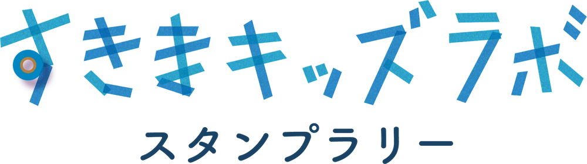

開催開始日
開催中！
掲示板のQRコードを読み取って、お魚のスタンプを集めよう！
3個で景品をゲットでき、6個そろうと、画面上で川が完成します。
このブラウザでは、記録を保存できません。
プライベートブラウズや、制限のあるアプリ内ブラウザでは、取得したスタンプが次のQRコードの読み取りに引き継がれません。SafariやChromeなどの通常のブラウザで、開き直してください。
お魚を集めよう！
COMPLETE!
お魚図鑑
掲示板のQRコードを読み取るたびに、図鑑のお魚が1匹ずつ増えます。同じ掲示板のQRコードは、何度読み取っても1個です。
掲示板のある場所
参加者ID
読み込み中…
このIDは端末ごとに自動発行されます。スタンプの取得では名前などの個人情報は収集しません。